The Big Bang
The Big Bang creates the universe, bringing forth the Celestials, Ego the Living Planet, the six concentrated singularities known as the Infinity Stones, and Yggdrasil: the World Tree connecting the Nine Realms.
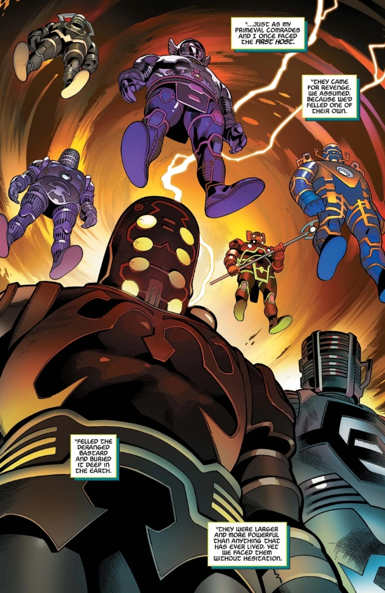
EPOCH: 13.8 BILLION BC - 1988 AD
The Big Bang creates the universe, bringing forth the Celestials, Ego the Living Planet, the six concentrated singularities known as the Infinity Stones, and Yggdrasil: the World Tree connecting the Nine Realms.

Arishem the Judge creates the synthetic Deviants and Eternals to shepherd planetary populations, planting a dormant Celestial seed (Tiamut) inside the core of planet Earth to incubate for emergence.
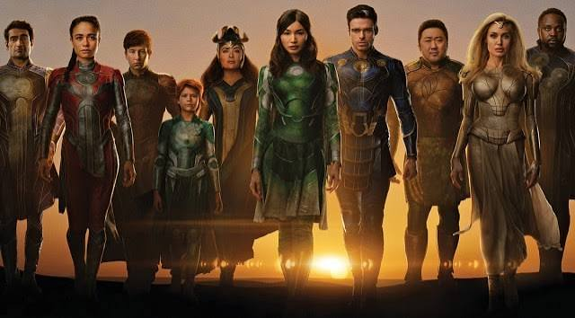
A massive extraterrestrial Vibranium meteorite impacts Earth, cleaving into two main deposits: one landing on the African continent in the future territory of Wakanda, and the other sinking deep into the Atlantic Ocean, mutating the subterranean flora of future Talokan.
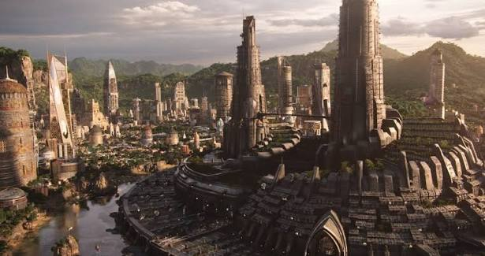
The ten Eternals touch down in Mesopotamia aboard the Domo to defend humanity from Deviants. Concurrently, Bashenga ingests the heart-shaped herb to become the first Black Panther of Wakanda, and Sorcerer Supreme Agamotto establishes the Sanctums to safeguard the Time Stone.
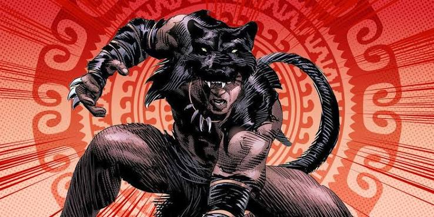
Asgardian King Bor confronts Malekith during the Convergence of Svartalfheim, neutralizing the liquid Reality Stone (the Aether). Later in this golden age, Odin and his daughter Hela wage campaigns across the cosmos, subjugating the Nine Realms under Asgardian hegemony.
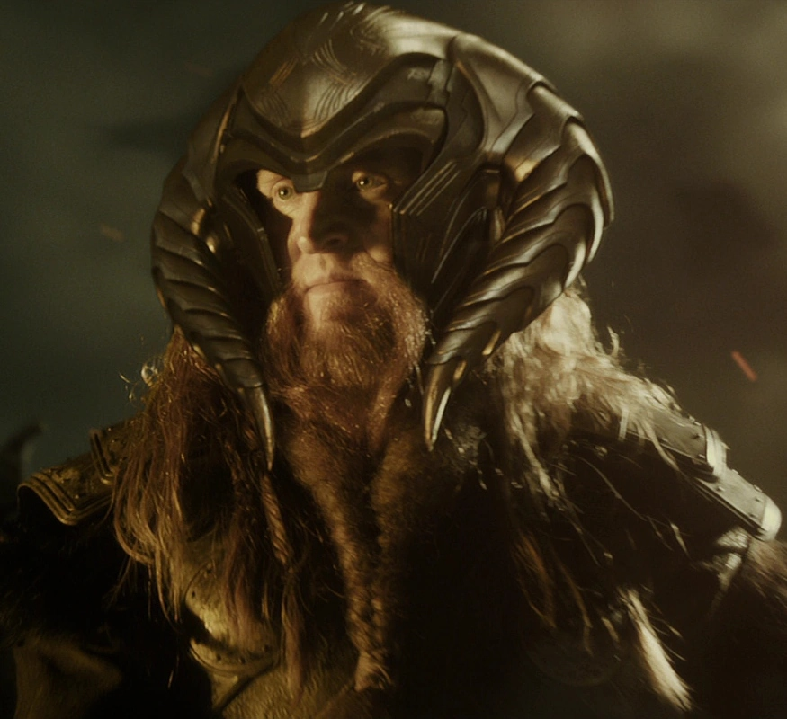
Warlord Xu Wenwu discovers the Ten Rings: mystical alien energy armbands granting immortality, enhanced martial prowess, and concussive energy manipulation. Over the subsequent millennium, he orchestrates secret dynasties and assassin empires across global history.
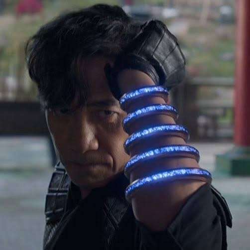
Yucatec Maya villagers afflicted by Spanish smallpox ingest an underwater Vibranium-infused plant. The concoction turns their skin blue, alters their respiratory physiology for ocean survival, and allows a pregnant woman to give birth to Namor (K'uk'ulkan), the feathered-serpent mutant king of Talokan.
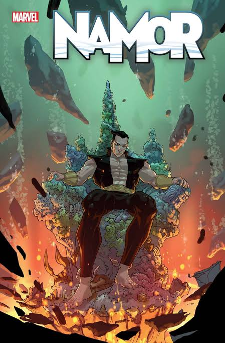
Agatha Harkness is tried by her mother Evanora and fellow witches in Salem, Massachusetts, for practicing forbidden dark magic. When the coven unleashes mystical execution energy upon her, Agatha turns the conduit back upon them, draining their collective life forces and sealing her dark sorcery.
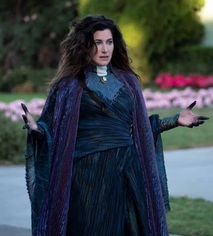
James Howlett is born in the Northwest Territories of Canada. The manifestation of his mutant genome grants him a cellular regenerative healing factor, decelerated aging, acute animalistic tracking senses, and retractable bone claws within his forearms.
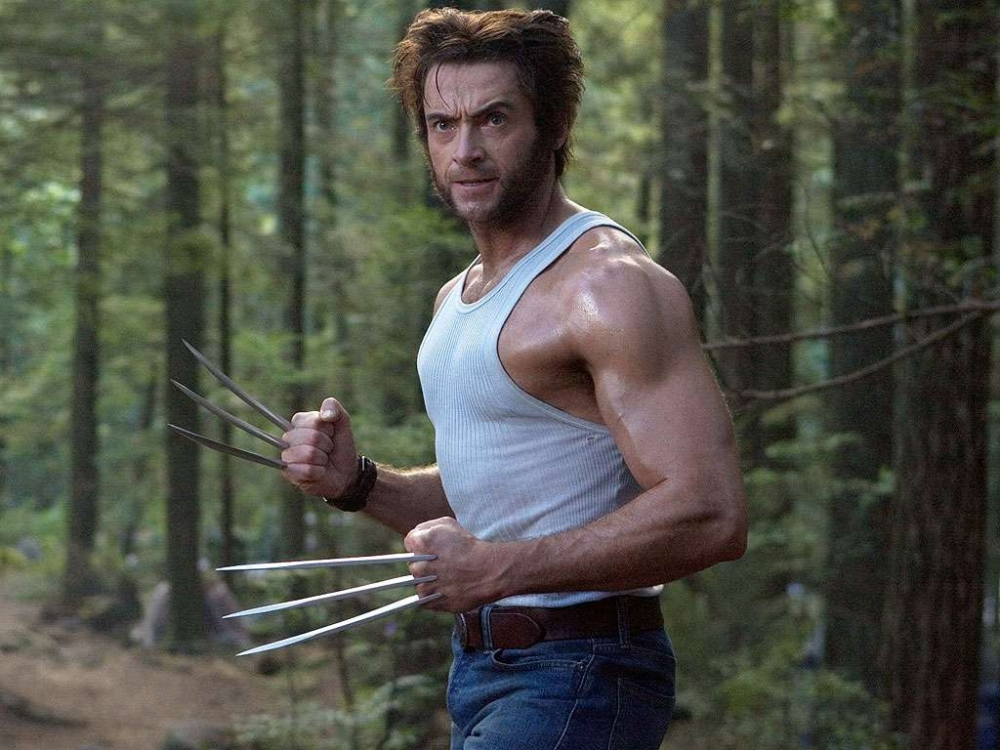
In Brooklyn, Steve Rogers receives Dr. Abraham Erskine's Super Soldier Serum and Vita-Rays, transforming into Captain America. Simultaneously across the European theater, young Max Eisenhardt (Erik Lehnsherr) suffers harrowing trauma at Auschwitz, inadvertently triggering his magnetic mutant awakening against iron camp gates.
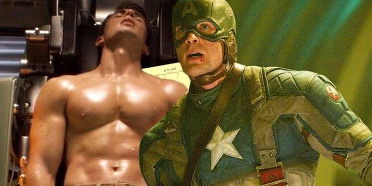
Captain America thwarts the Red Skull aboard the Valkyrie super-bomber, crashing the aircraft into Greenland's Arctic ice shelf and freezing into suspended animation. Concurrently, Soviet and Hydra operatives recover the wounded Bucky Barnes, amputating his crushed arm, replacing it with cybernetics, and brainwashing him into the Winter Soldier.
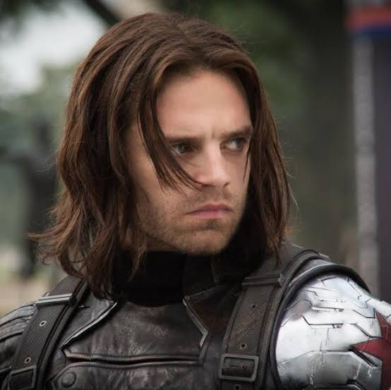
Following the conclusion of World War II and the dissolution of the Strategic Scientific Reserve (SSR), Agent Peggy Carter, industrialist Howard Stark, and Colonel Chester Phillips establish the Strategic Homeland Intervention, Enforcement and Logistics Division (S.H.I.E.L.D.).
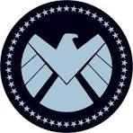
During the Korean War in Goyang, Korean peninsula, African American super-soldier Isaiah Bradley engages the Soviet cybernetic assassin Winter Soldier in hand-to-hand combat, shattering part of Barnes' metal prosthetic arm before the US military incarcerates Bradley for decades.
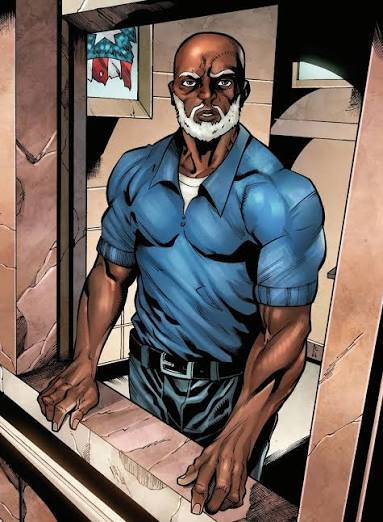
The X-Men prevent nuclear cataclysm orchestrated by Sebastian Shaw and the Hellfire Club off the coast of Cuba. A deflected naval bullet severs Charles Xavier's spine, permanently paralyzing him, while Erik Lehnsherr adopts the mantle of Magneto and forms the Brotherhood.
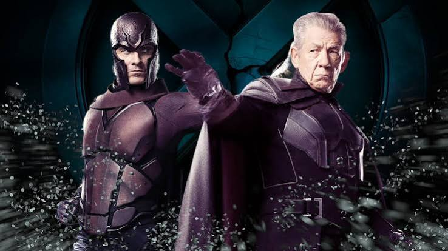
Steve Rogers and Tony Stark travel backwards in time from 2023 to Camp Lehigh S.H.I.E.L.D. facility. Tony shares an emotional parting exchange with his father Howard Stark, while Steve secures vials of Pym Particles from young Hank Pym's laboratory to fuel their temporal return.
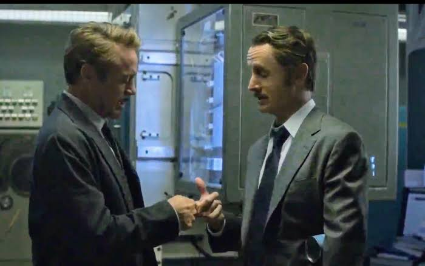
Consciousness-projected Wolverine halts Mystique from assassinating Bolivar Trask in Paris, altering mutant history. Magneto commandeers the prototype Sentinels at RFK Stadium, but the future Sentinel apocalypse is averted, generating a splintered mutant continuity.
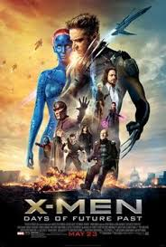
Ego the Living Planet returns to Earth in Missouri. Recognizing that true romantic devotion to Meredith Quill threatens his universe-wide celestial expansion, Ego covertly implants a malignant brain tumor into Meredith's head before leaving the planet.
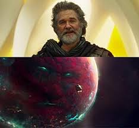
Moments after Meredith Quill succumbs to brain cancer in hospital, eight-year-old Peter Quill runs out into the night and is abducted by Yondu Udonta's Ravager M-Ship. Refusing to deliver the boy to Ego, Yondu raises Quill as a Ravager scoundrel.
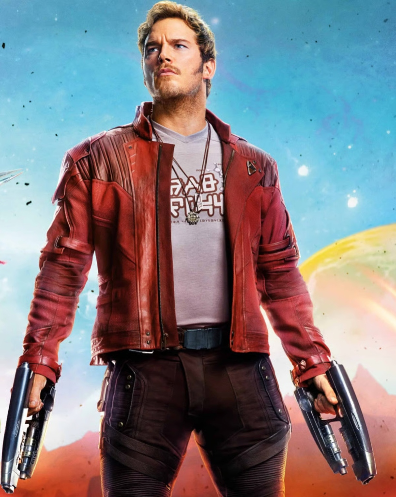
EPOCH: 2005 AD - 2014 AD
At Culver University in Virginia, Dr. Bruce Banner tests an experimental cellular radiation formula designed to revive WWII Super Soldier bio-enhancements. Subjected to massive gamma radiation, Banner undergoes catastrophic cellular mutation, becoming the Incredible Hulk.
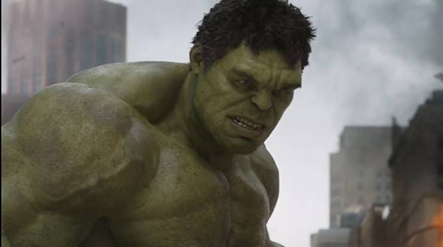
Aboard the Arête laboratory ship, the High Evolutionary subjects an innocent North American raccoon designated Subject 89P13 to cybernetic cerebral augmentation. Showing unprecedented intellectual problem-solving, Rocket escapes captivity following the tragic deaths of Lylla, Teeths, and Floor.
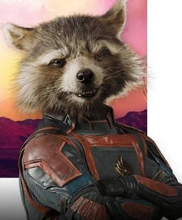
Ambushed by the Ten Rings in Afghanistan, Tony Stark constructs a miniaturized palladium Arc Reactor in his chest and forges the iron Mark I suit to escape. Back in Malibu, he refines the hot-rod red and gold Mark III armor, defeats Obadiah Stane's Iron Monger, and shocks a global press conference: "I am Iron Man."
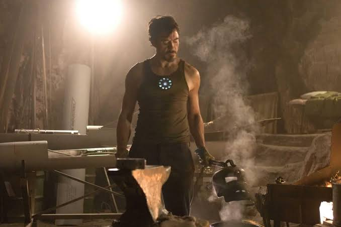
After nearly seventy years encased within Arctic ice, Steve Rogers is excavated by S.H.I.E.L.D. Awakened in a simulated 1940s convalescence ward, Rogers discovers the deception, breaks out into modern 21st-century Times Square, and is greeted by Director Nick Fury.
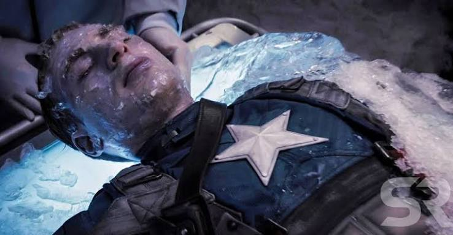
Loki uses the Tesseract to open a wormhole above Stark Tower, unleashing the Chitauri armada upon Manhattan. Iron Man, Captain America, Thor, the Hulk, Black Widow, and Hawkeye unite as the Avengers, neutralizing the invasion and apprehending Loki.
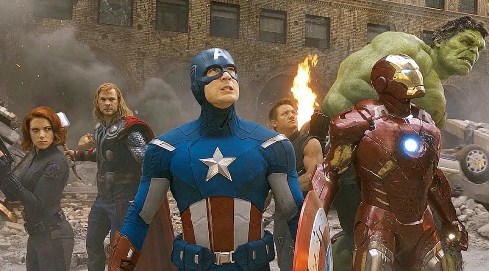
In London, Thor battles Malekith during the planetary Convergence at Greenwich, securing the Reality Stone (the Aether) before the Dark Elves can plunge the Nine Realms into eternal night. Across the Atlantic, Tony Stark concludes the Clean Slate Protocol.
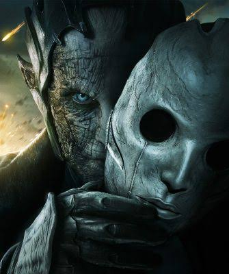
Captain America, Black Widow, and Falcon discover that Hydra has secretly festered inside S.H.I.E.L.D. since 1946. They sabotage Alexander Pierce's Project Insight Helicarriers over the Potomac River, declassifying all intelligence archives and dismantling S.H.I.E.L.D.
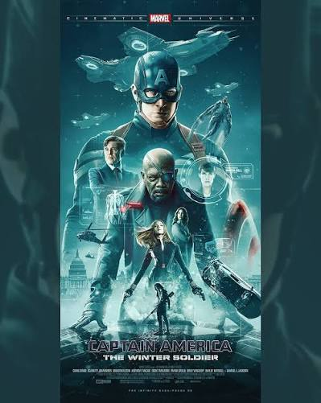
Star-Lord, Gamora, Drax the Destroyer, Rocket Raccoon, and Groot form an improbable alliance on the Kyln. Above Xandar, they defeat Kree fanatic Ronan the Accuser, linking hands to harness the catastrophic energy of the Power Stone within the Orb.
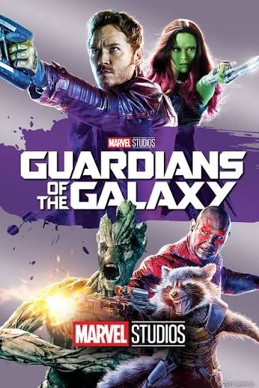
EPOCH: 2015 AD - 2026+ AD
Tony Stark and Bruce Banner accidentally awaken Ultron using the Mind Stone within Loki's scepter. Ultron attempts extinction by lifting Novi Grad as an artificial meteor; the Avengers destroy the city, birth the synthezoid Vision, but Sokovia suffers devastating devastation.
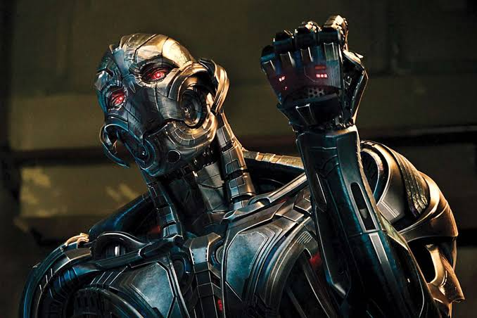
The UN ratifies the Sokovia Accords, fracturing the Avengers into opposing factions led by Tony Stark and Steve Rogers. Simultaneously, neurosurgeon Dr. Stephen Strange travels to Kamar-Taj, masters the mystic arts under the Ancient One, and traps Dormammu in an infinite time loop using the Eye of Agamotto.
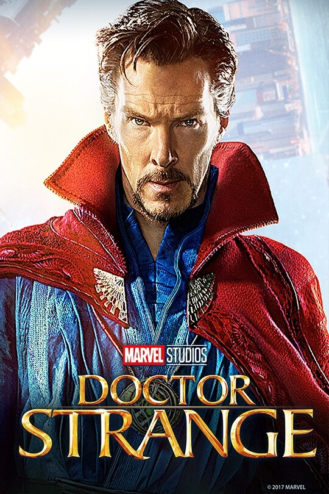
Thanos executes his intergalactic crusade, collecting all six Infinity Stones: Space, Mind, Reality, Power, Time, and Soul. Despite resistance in Wakanda and Titan, Thanos snaps his fingers on the Infinity Gauntlet, instantly wiping out fifty percent of all living beings across the universe.
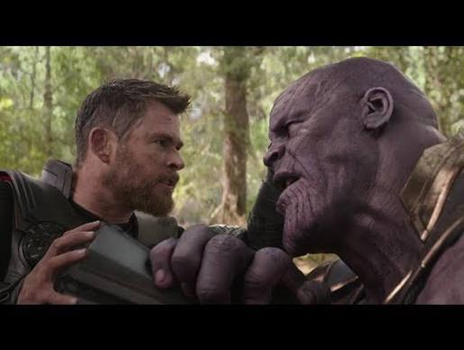
Five years post-Snap, Scott Lang returns from the Quantum Realm with temporal mechanics. The remaining Avengers retrieve the Infinity Stones across past timelines. Bruce Banner snaps everyone back to life, and Tony Stark makes the ultimate sacrifice with the Nano Gauntlet to disintegrate Thanos' forces.
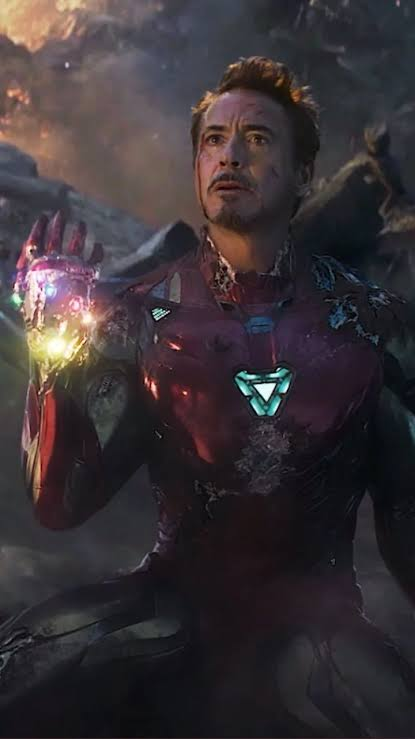
A variant Loki escapes 2012 with the Tesseract and is arrested by the Time Variance Authority. Following the collapse of the Temporal Loom, Loki masterfully controls time-slipping, walks out into the temporal radiation, and gathers the dying timelines in his hands, replacing the loom to become the God of Stories holding the Multiverse together.
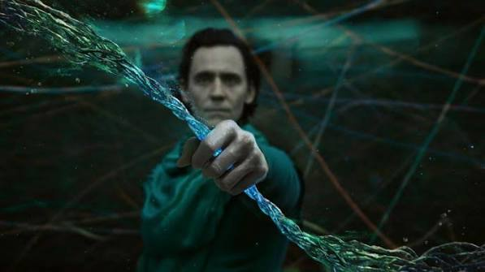
A corrupted Runes of Kof-Kol memory spell by Doctor Strange ruptures the multiverse fabric above New York. Variants Green Goblin, Doc Ock, Electro, Sandman, Lizard, and alternate Peter Parkers (Earth-96283 and Earth-120703) bleed through into Earth-616 before a global forgetting spell seals the tears.
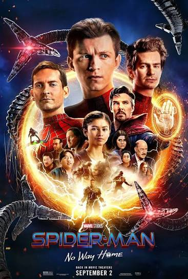
Wanda Maximoff encloses Westview, New Jersey, in a chaos-magic sitcom reality, fully manifesting as the mythical Scarlet Witch. Corrupted by the Darkhold tome, she dreamwalks across alternate universes to slaughter the Illuminati of Earth-838, before collapsing Mount Wundagore to destroy all copies of the book.
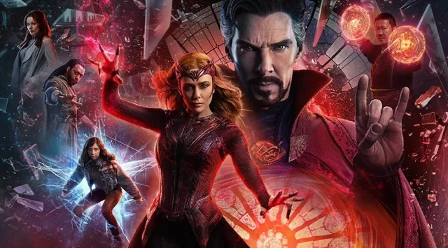
Deadpool journeys into the Void to recruit an anchor-being Wolverine, thwarting Cassandra Nova and saving his home timeline from premature pruning. Simultaneously across the multiverse, the Fantastic Four emerge from an alternate retro-futuristic 1960s universe, heralding cosmic incursions and the impending arrival of Doctor Doom.
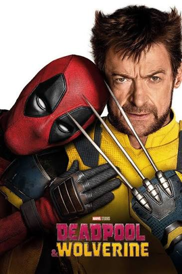
Following the total erasure of Peter Parker's identity from public memory, Spider-Man returns to his roots in a handmade suit. Navigating the shadows of New York, he crosses paths with Bruce Banner's Hulk, initiating a grounded, gritty new chapter of city-wide vigilance and mutual defense.
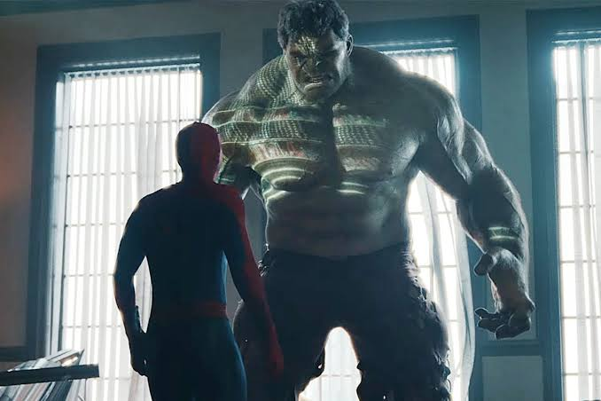
The multiversal incursions reach their terminal threshold as entire timelines collide and disintegrate. From the ashes of reality emerges Victor Von Doom, seizing sovereign dominion over Battleworld to prepare the cosmos for the cataclysm of Secret Wars.
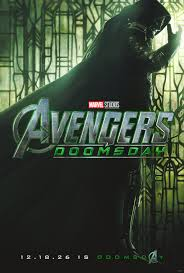